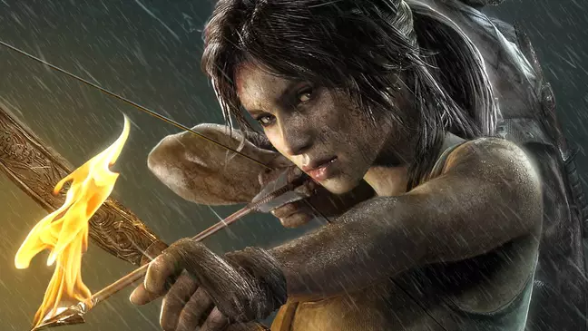
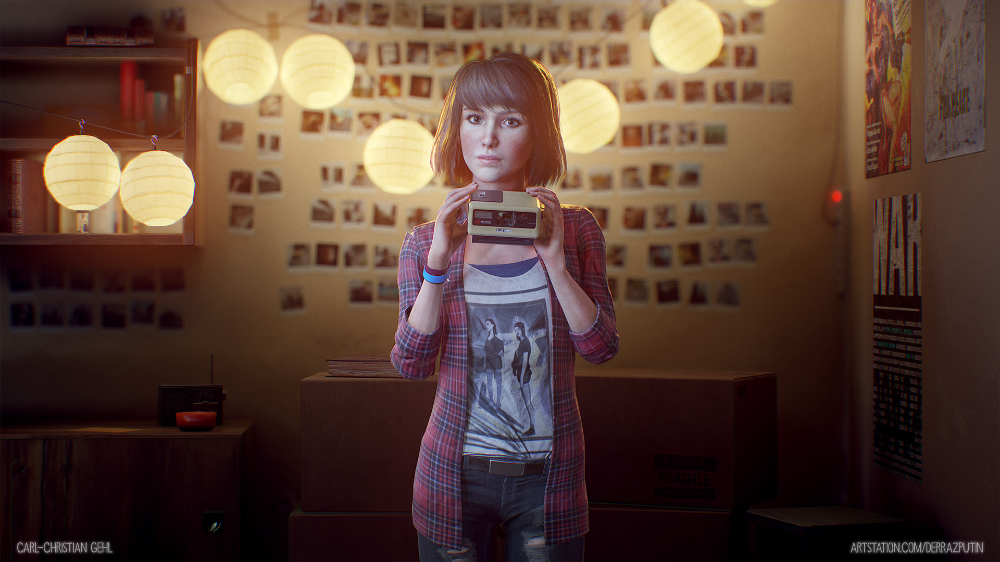
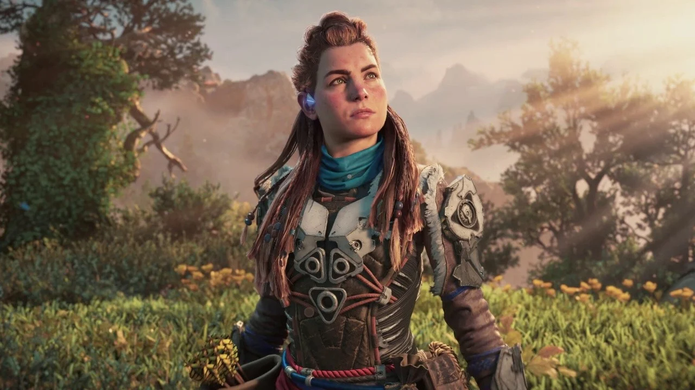
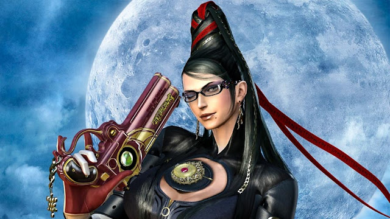
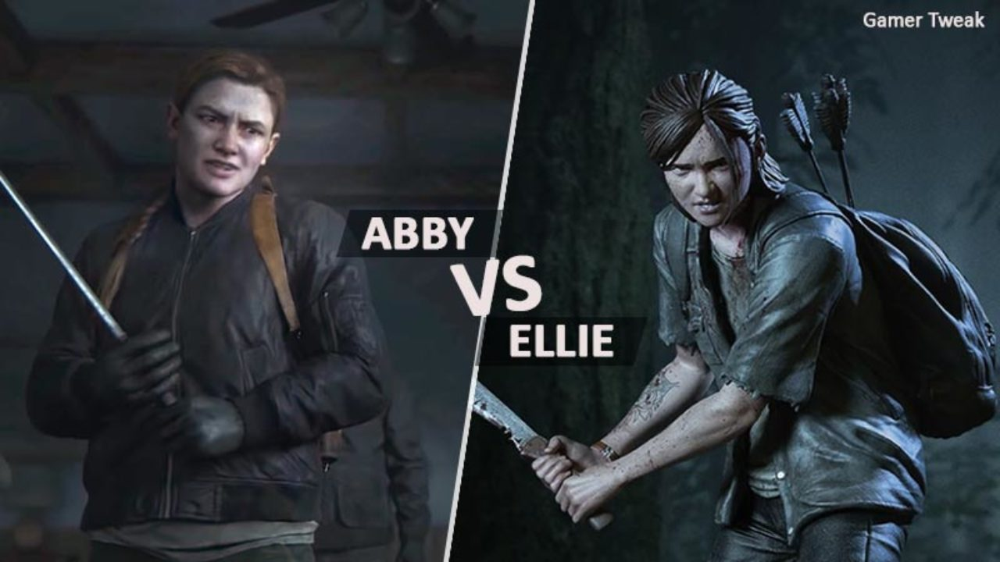

O protagonismo feminino presente nos jogos
Mulheres protagonistas de jogos? Temos sim, e várias!
Sabe-se que ainda hoje uma grande maioria dos jogos são protagonizados por homens, entretando, existem jogos (espetaculares por sinal!) que são protagonizados por garotas, com histórias sensacionais e envolventes. Garotas de vários estilos, de vários mundos diferentes, pra todos os gostos, pois são jogos que pertencem pertencem a diversos tipos e estilos, do terror a sobrevivência. Veja abaixo alguns dos jogos e uma pequena descrição sobre eles e suas fantásticas garotas.

Tomb Raider
Um dos jogos mais famosos que contém a fantástica Lara Croft estampada em seus jogos. Esse jogo foi lançado em 1996, após esse ano quase todos os anos fomos agraciados com suas continuações. Atualmente seu últimoo jogo da franquia a ser lançado foi o Shadow of Tomb Raider em 2018 e Tomb Raider Reloaded para mobile em 2022. Sobre a personagem, Lara é uma arqueóloga muito inteligente que está sempre em novas aventuras em busca de artefatos valiosos da história da humanidade, tem sempre muita destreza em suas viagens e é muito atlética, o que a ajuda a sair das diversas roubadas que ela mesmo se mete, de lutas com bandidos até obstáculos na natureza. Se você se interessou em jogar esse jogo, clique aqui e seja redirecionado para a página oficial dele ou aonde é vendido.
Life is Strange
Life is Strange é um jogo para quem gosta de gráficos bonitos, detalhes bem feitos, é realmente de se impressionar. É um jogo que suas atitudes que comandam, e você tem a chance de voltar no tempo caso não se satisfaça, usando isso ao seu favor, mas todas suas ações tem consequências futuras, é um jogo realmente intrigante. É um jogo com uma história completa, jogada na visão da protagonista, a Max Caulfield, ou apenas Max. Uma garota bem introvertida que tem a fotografia como sua aspiração, mas que encontra uma reviravolta e poderes difíceis de lidar. Se você se interessou em jogar esse jogo, clique aqui e seja redirecionado para a página oficial dele ou aonde é vendido.
Horizon Zero Dawn
Horizon é um jogo que se passa na era que as máquinas vagam livremente e a humanidade deixou de ser a espécie dominante, o mundo havia se tornado primitivo e pós apocaliptico, e a sociedade era dividida em ibos como os Carja, os Oseram, os Banuk e os Nora. Por muito tempo, esses povos coexistiram tranquilamente com máquinas robóticas, que se parecem com animais e dinossauros, mas algo fez com que os robôs ficassem progressivamente mais agressivos. O início dessa mudança de comportamento ficou conhecido por “Desarranjo das Máquinas.” Mas o que causou esse desastre global e deixou o mundo nessa condição arcaica high-tech, ninguém sabe. A história começa com a pequena Aloy, um bebê encontrado na montanha sagrada da tribo Nora pela matriarca Teersa, que acaba vendo grande importância na criança. Porém, Lansra, a matriarca mais azeda das três, acredita que o bebê é amaldiçoado e que traz perigo para a tribo. Por isso Aloy foi exilada, e entregue aos cuidados de Rost. Aloy uma jovem caçadora, que cresceu sentindo o desprezo da sua própria tribo sem entender o porque, inicia então sua jornada nesse mundo pós apocalíptico que está em ruínas. As máquinas, terriveis criaturas mecânicas dominam tudo. e Aloy que aprendeu a sobreviver a qualquer dificuldade, graças ao foco e os ensinamentos de Rost, usa tudo que tem para ir atrás do seu objetivo, saber quem eram os pais dela e porque havia sido exilada pela tribo. Se você se interessou em jogar esse jogo, clique aqui e seja redirecionado para a página oficial dele ou aonde é vendido.
Bayonetta
Bayonetta é a última bruxa sobrevivente de sua geração. Após adormecer por 500 anos, ela acorda sem memória, com a missão de estabelecer o equilíbrio entre o bem e o mal. Ao longo do jogo, flashes de sua vida vão aparecendo e ela se lembra de dois grupos que cuidavam do balanço entre luz e trevas. Umbra Witches é a facção das Trevas, que Bayonetta escolhe para fazer parte, e Lumen Sages, a responsável pela luz. A personagem que dá nome ao jogo tem personalidade muito forte e sabe manusear armas com as mãos e também com os pés! Auto-confiança é o seu melhor adjetivo. Bayonetta é um personagem muito legal porque, por mais que ela seja objetificada, veio com esse propósito justamente pra mostrar o quanto a liberdade da mulher é importante, ela mostra que mulher pode se vestir da maneira que bem entende e ainda ser badass, pois ela é livre para escolher como lutar, com o que lutar, sempre de forma independente e empunhando quatro pistolas, uma em cada membro do corpo. Se você se interessou em jogar esse jogo, clique aqui e seja redirecionado para a página oficial dele ou aonde é vendido.
Resident Evil
Esse jogo é um clássico da franquia de terror que existe ha muitos anos, gostando ou não do estilo todos já ouviram falar de Resident Evil, e isso é um fato. Resident Evil é um jogo de sobrevivencia em um apocalipse zumbi, e temos duas protagonistas femininas incríveis nesse jogo, elas são Jill Valentine e Claire Redfield. Jill pertence ao primeiro jogo da franquia, ela é uma policial muito habilidosa e dona de um forte senso de justiça, sempre opta pelo que é certo, custe o que custar. Nunca deixa seus compaheiros para trás e é a grande heroina dessa primeira parte. Claire Redfield é uma ativista de uma organização de direitos humanos e é durona, ainda mais pra uma civil. Claire levava uma vida perfeitamente normal, sendo uma estudante apaixonada por motocicletas, até o repentino desaparecimento de Chris, seu irmão e personagem do primeiro jogo, junto com a Jill. Ela decidiu ir até Raccoon City tentar descobrir o paradeiro dele e se envolveu na trágica história da cidade. A partir daí, Claire se viu comovida com as vítimas da pesquisa ilegal e do bioterrorismo e se tornou uma ativista para combater esse tipo de atividade. Se você se interessou em jogar esse jogo, clique aqui e seja redirecionado para a página oficial dele ou aonde é vendido.

The Last of Us
The Last of Us é uma experiência de gênero definitiva que mistura elementos de sobrevivência e ação para contar uma história de personagens sobre uma praga moderna dizimando a humanidade. A natureza invade a civilização, forçando os sobreviventes restantes a matarem por comida, armas e qualquer coisa que possam achar. Joel, um sobrevivente impiedoso, e Ellie, uma corajosa jovem garota adolescente que é sábia além de sua idade, uma garota que não costuma demonstrar medo quanto aos perigos do novo mundo,praticamente cresceu em meio ao caos, então devem trabalhar juntos para sobreviverem sua jornada através do que resta dos Estados Unidos. Ellie é a personagem principal, mas infelizmente no jogo um, como ela ainda é mais novinha, ela é mais protegida por Joel e não tão jogável, entretando entra o jogo dois da saga, que além de Ellie mais ativa e uma verdadeira protagonista, temos Abby com (ou melhor, contra né?) ela, uma segunda protagonista feminina. A história desse jogo se passa com Ellie buscando vingança pela morte do seu cuidador, ou melhor, pai, que foi morto na frente dela por Abby. Ellie, que apesar da vida difícil, era uma garota que outrora fosse feliz na sua maneira, estava obcecada pela vingança, e junto da sua namorada passou por cima de muitas coisas e pessoas para tentar cumprir esse objetivo.Já Abby entrou na saga para se vingar do responsável pela morte de seus pais, Joel, que era o cuidador de Ellie, se tornando assim a vilã do jogo, mas a medida que jogo foi jogado (melhorar frase) você vê o lado mais humanizado de Abby, mostrando que ela é mais uma vítima de um mundo pós-apocalíptico cheio de ódio, mas que ainda tem muita bondade em seu coração. The Last of Us desde o primeiro é um jogo com muita emoção, muitos sentimentos variados e com personagens incriveis para explorar a história. Se você se interessou em jogar esse jogo, clique aqui e seja redirecionado para a página oficial dele ou aonde é vendido.
